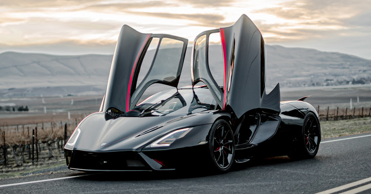
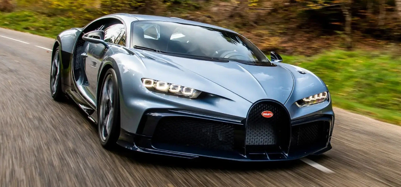
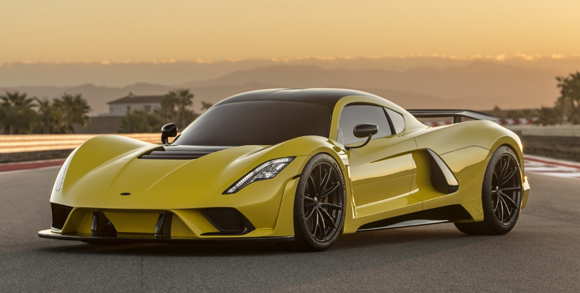
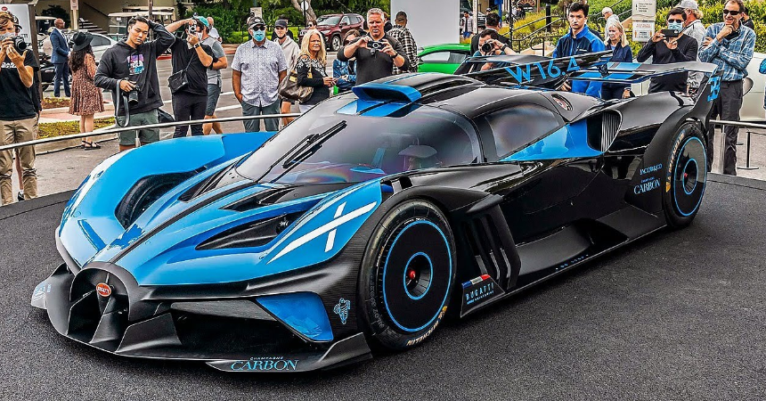
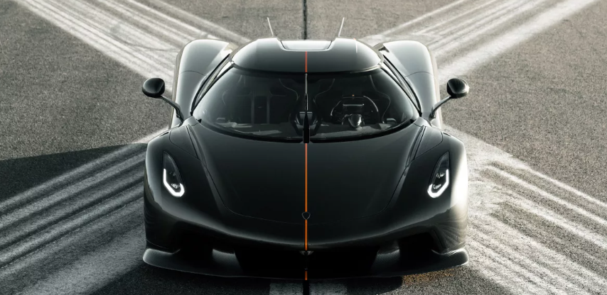

Veja os 5 carros mais rápidos do mundo:
5. SSC Tuatara (455 km/h)

O SSC Tuatara entrega até 1774 cavlos de potência e faz de 0 a 100 km/h em 2,5 segundos. O custo desse carro é de US$ 2 milhões.
4. Bugatti Chiron (483 km/h)

O Bugatti Chiron entrega até 1622 cavalos de potência e faz de 0 a 100 km/h em 2,3 segundos. O Custo desse carro é de US$ 4 milhões.
3. Hennessey Venom F5 (499 km/h)

O Venom F5 entrega até 1842 cv de potência e faz de 0 a 100 km/h em 2,4 segundos. O custo desse carro é de US$ 1,8 milhão.
2. Bugatti Bolide (500 km/h)

O Bugatti Bolide entrega até 1.825 cv de potência e faz de 0 a 100 km/h em 2,17 segundos. O custo desse carro é de US$ 5 milhões.
1. Koenigsegg Jesko Absolut (531 km/h)

O Koenigsegg Jesko Absolut entrega até 1622 cv e faz de 0 a 100 km/h em 3 segundos. O custo desse carro é de US$ 3 milhões.